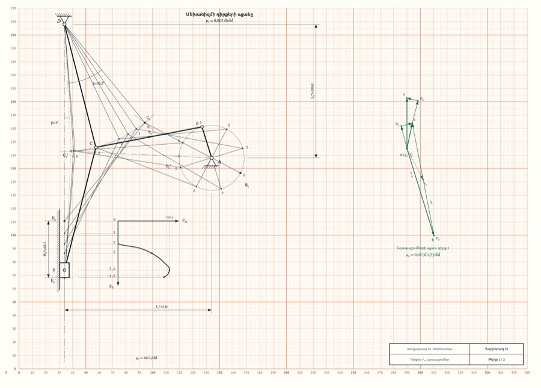
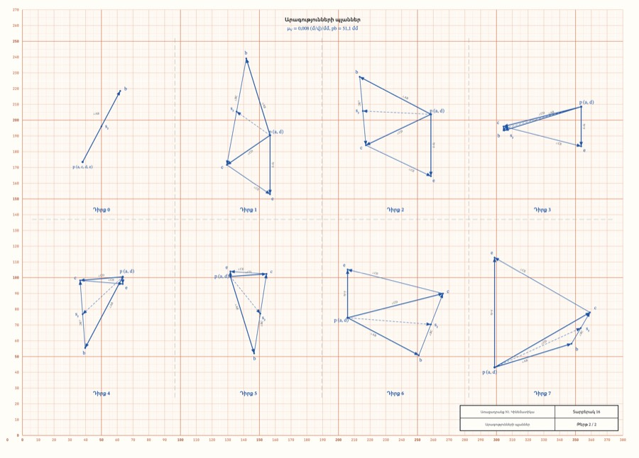
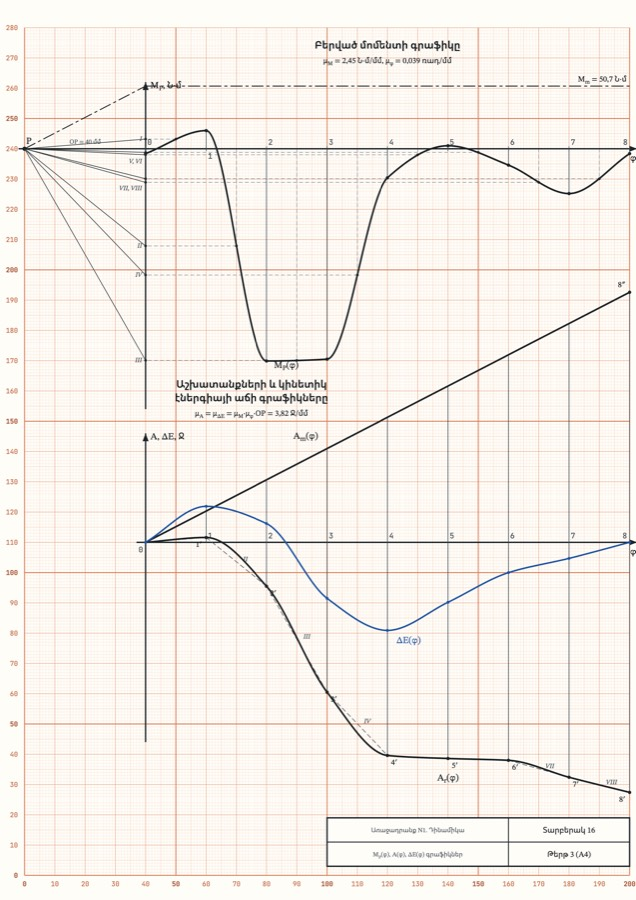
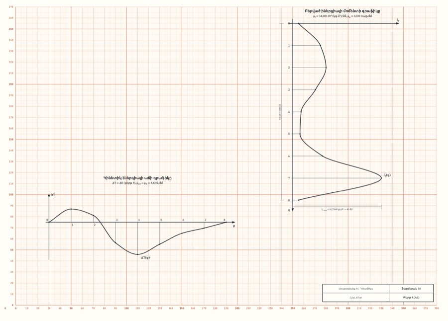

re գրաֆիկը և արագացումների պլանը">A3 · հորիզոնական
Թերթ 1. Դիրքերի պլան
- Մեխանիզմի 8 դիրքերը
- Fre գրաֆիկը
- 3-րդ դիրքի արագացումների պլանը
Սկիզբ
Աշխատանքը՝ տետրի էջեր 10–22 և 4 միլիմետրական թերթ (3 × A3, 1 × A4)։ Թվերը բոլորն արդեն հաշված են. ձախում՝ ինչ գրել տետրում, աջում՝ ինչ գծել թղթի վրա։
0 / 14 էջ գրված

re գրաֆիկը և արագացումների պլանը">

P(φ), Ar, Am և ΔE գրաֆիկները">
P(φ) (շրջված 90°-ով) և ΔT(φ) գրաֆիկները">Յուրաքանչյուր քայլի կողքին գրված է՝ որտեղ է այն գրվում (✍ տետրում) կամ գծվում (📐 թերթի վրա)։
Սկիզբ
Յուրաքանչյուր քայլում՝ ինչու ենք այդպես հաշվում, բանաձևը և տեղադրված թվերը։ Մանրամասն կառուցումը՝ §1–§3 բաժիններում։
μl = 0,002 մ/մմ
Իրական մեխանիզմը թղթի վրա չի տեղավորվի, ուստի այն գծում ենք փոքրացված։ L1 = 0,220 մ հեռավորությունը գծում ենք 110 մմ. μl-ն ցույց է տալիս, թե գծագրի 1 մմ-ը քանի մետր է իրականում։
Հակառակը՝ ցանկացած իրական երկարություն գծագրային դարձնելու համար այն բաժանում ենք μl-ի. օր.՝ CD* = 0,190 / 0,002 = 95,0 մմ։
ψ = 36,2°
CD լծակը ճոճվում է երկու եզրային դիրքերի միջև։ Այդ դիրքերը որոշվում են սողնակի ամենացածր (E₀′) և ամենաբարձր (E₀) դիրքերով։ ψ-ն այդ երկու դիրքերում DC-ի միջև եղած անկյունն է։
Գծագրում՝ անկյունաչափով չափեք C₀DC₀′ անկյունը։
AB* = 24,4 մմ, BC* = 80,9 մմ
Լծակի եզրային դիրքերում կռունկը և շարժաթևը մեկ ուղղի վրա են։ C₀ դիրքում դրանք ծալված են (B₀—A—C₀, A-ն մեջտեղում), C₀′ դիրքում՝ ձգված (A—B₀′—C₀′)։ Այսպիսով A-ից մինչև C₀ և C₀′ երկու հեռավորությունը տալիս են երկու հավասարում՝ երկու անհայտով։
Կետերը՝ C₀(94,0; 184,4), C₀′(39,0; 163,1), A(144,0; 158,0)։
Իրական երկարությունները ստանալու համար գծագրայինը բազմապատկում ենք մասշտաբով.
ω1 = 8,378 ռադ/վ
n1-ը տրված է պտույտ/րոպե-ով, իսկ հաշվարկի համար պետք է ռադ/վ։ Մեկ պտույտը 2π ռադ է, մեկ րոպեն՝ 60 վ. հետևաբար ω1 = 2πn1/60 = πn1/30։
VB = 0,409 մ/վ, pb = 51,1 մմ
B կետը պտտվում է A-ի շուրջը AB շառավղով, ուստի նրա արագությունը հավասար է անկյունային արագության և շառավղի արտադրյալին։ Այն ուղղահայաց է AB-ին և ուղղված է պտույտի կողմը (↺)։ Կռունկը պտտվում է հավասարաչափ, ուստի VB-ն բոլոր դիրքերում նույնն է։
Արագությունների պլանում VB-ն պատկերում ենք pb հատվածով։ Օրինակի տետրում pb-ն վերցված է ≈ 50 մմ. մասշտաբը կլորացնում ենք՝ μV = 0,008 (մ/վ)/մմ։
Գծագրում՝ pb հատվածը տարեք p բևեռից ⊥ AB։
aB = 3,425 մ/վ², πb = 68,5 մմ
ω1 = const, ուստի շոշափող արագացում չկա (ε1 = 0)։ Մնում է միայն նորմալ (կենտրոնաձիգ) արագացումը, որը միշտ ուղղված է B-ից դեպի պտտման կենտրոն A։
Արագացումների պլանի մասշտաբը՝ μa = 0,05 (մ/վ²)/մմ.
Գծագրում՝ πb հատվածը տարեք π բևեռից AB-ին զուգահեռ, B-ից A ուղղությամբ։
205,0° / 155,0°
Աշխատանքային ընթացքում սողնակը E₀-ից իջնում է E₀′, պարապ ընթացքում վերադառնում է։ Պետք է պարզել, թե այդ ընթացքում կռունկը քանի աստիճան է պտտվում։ Սկիզբը B₀ դիրքն է (C₀A ուղղի շարունակության վրա), վերջը՝ B₀′ (AC₀′ հատվածի վրա)։
A-ով տանենք հորիզոնական. AB₀-ն աջ կողմում է, հորիզոնականից 27,8° ցածր, AB₀′-ը՝ ձախ կողմում, 2,8° բարձր։ Ժամացույցի սլաքի հակառակ ուղղությամբ B₀-ից B₀′ կռունկը նախ բարձրանում է 27,8°-ով մինչև հորիզոնական, ապա վերևի կիսաշրջանով անցնում 180° − 2,8°։
Մեխանիզմը վեցօղակ է. ABCD կռունկա-ճոճաթևային քառօղակին միացված է CE շարժաթևը և E սողնակը, որը լծակի ճոճումը վերածում է սողնակի ուղղաձիգ շարժման։
| Նշանակում | HE | L1 | L2 | lCD | n1 | G2 | G5 | IS₂ | Fremax |
|---|---|---|---|---|---|---|---|---|---|
| Միավոր | մմ | մմ | մմ | մմ | պտ/րոպ | Ն | Ն | 10⁻³ կգ·մ² | 10² Ն |
| 16 | 85 | 220 | 200 | 190 | 80 | 180 | 480 | 80 | 77 |
| SI | 0,085 մ | 0,220 մ | 0,200 մ | 0,190 մ | 80 պտ/րոպ | 180 Ն | 480 Ն | 0,08 կգ·մ² | 7700 Ն |
Այս թերթի (կինեմատիկայի) համար պետք են HE, L1, L2, lCD = lCE, n1, β և Fre գրաֆիկի ձևը։ G2, G5 և Fremax-ը պետք են §4-ում (բերված մոմենտ), Mm-ը որոշվում է §5-ում, IS₂-ը պետք է §6-ում (բերված իներցիայի մոմենտ), δ-ն՝ հետագա բաժիններում (թափանիվ)։ IS₂-ի միավորը՝ 10⁻³ կգ·մ² (դասախոսի ասածով)։
Տետրի հաշվարկը
✍ Տետրում՝ էջ 10–11։ Այստեղ՝ ինչու է այդպես հաշվվում։
Գծագրում L1-ը պատկերում ենք L1* = 110 մմ հատվածով. այդպես ամբողջ մեխանիզմը (D-ից մինչև E₀′ ≈ 190 մմ) տեղավորվում է A3 թերթի ձախ կեսում, իսկ աջ կեսը մնում է պլանների համար։
Իրական երկարությունները բաժանելով μl-ի՝ ստանում ենք գծագրային երկարությունները.
Սողնակը շարժվում է D-ով անցնող ուղղաձիգով։ Քանի որ CE = CD, DCE եռանկյունը միշտ հավասարասրուն է, և E-ն գտնվում է D-ից ուղիղ ներքև՝ DE = 2·CD·cos∠CDE, որտեղ ∠CDE-ն DC-ի շեղումն է ուղղաձիգից։ Որքան DC-ն մոտ է ուղղաձիգին, այնքան E-ն ցածր է։ Ստորին եզրային դիրքում DC-ն ուղղաձիգից շեղում ենք β = 3°, որպեսզի D, C, E կետերը երբեք մեկ ուղղի վրա չհայտնվեն։
Լծակի եզրային դիրքերում AB կռունկը և BC շարժաթևը գտնվում են մեկ ուղղի վրա։ C₀ դիրքում դրանք ծալված են. A-ն B₀-ի և C₀-ի միջև է (B₀C₀ − AB = AC₀)։ C₀′ դիրքում ձգված են. B₀′-ը A-ի և C₀′-ի միջև է (AB₀′ + B₀′C₀′ = AC₀′)։ Գծագրից չափում ենք AC₀ = 56,5 մմ, AC₀′ = 105,2 մմ։
Կռունկը լրիվ պտույտ կանի, եթե ամենակարճ և ամենաերկար օղակների գումարը փոքր է մյուս երկուսի գումարից (Գրասհոֆի պայման).
Փոխանցման նվազագույն անկյունը (BC-ի և CD-ի միջև) γmin ≈ 20,7°, այսինքն՝ փոխանցման անկյունը փոքր է (ցանկալի է ≥ 40°), սակայն դա բխում է առաջադրանքի տվյալներից. Գրասհոֆի պայմանի համաձայն կռունկը լրիվ պտույտ է անում, և մեխանիզմը չի խրվում։
Կռունկը պտտվում է ժամացույցի սլաքի հակառակ ուղղությամբ. B₀-ից B₀′ (սողնակը իջնում է, աշխատանքային ընթացք) կռունկը պտտվում է 205,0°, իսկ վերադարձին (պարապ ընթացք)՝ 155,0°։
Կռունկի շրջանագիծը B₀-ից սկսած ժամացույցի սլաքի հակառակ ուղղությամբ բաժանում ենք 8 հավասար մասի՝ 0, 1, …, 7 դիրքեր։ Յուրաքանչյուր դիրքի համար կարկինով գտնում ենք.
0-րդ դիրքում սողնակը վերին եզրային դիրքում է (E₀), B₀′ դիրքում՝ ստորին (E₀′)։ Աշխատանքային դիրք ընտրում ենք 3-րդը (ինչպես օրինակի թերթում). այն գծում ենք հաստ գծերով։
Տետրի հաշվարկը
✍ Տետրում՝ էջ 11–13, պլանները՝ թերթ 2-ում։
Կռունկը պտտվում է հաստատուն անկյունային արագությամբ.
VB ⊥ AB և ուղղված է ω1-ի պտույտի կողմը (↺)։ Մեծությունը բոլոր դիրքերում նույնն է։
Ընտրում ենք μV = 0,008 (մ/վ)/մմ, որ pb-ն լինի ≈ 50 մմ (ինչպես օրինակում)։ B կետի արագությունը պատկերող հատվածը.
C կետը պատկանում է և՛ 2 օղակին (շարժվում է B-ի նկատմամբ), և՛ 3 օղակին (պտտվում է D-ի շուրջը).
| VC | = | VB | + | VCB | |
|---|---|---|---|---|---|
| մեծություն | ? | 0,409 մ/վ | ? | ||
| ուղղություն | ⊥ CD | ⊥ AB | ⊥ BC |
Կառուցում. p բևեռից տանում ենք pb ⊥ AB (51,1 մմ), b կետով՝ BC-ին ուղղահայաց ուղիղ, p կետով (D-ի պատկերը p-ում է)՝ CD-ին ուղղահայաց ուղիղ։ Դրանց հատումը c կետն է։
| VE | = | VC | + | VEC | |
|---|---|---|---|---|---|
| մեծություն | ? | հայտնի (pc) | ? | ||
| ուղղություն | ∥ y–y (ուղղաձիգ) | ⊥ CD | ⊥ CE |
Կառուցում. c կետով տանում ենք CE-ին ուղղահայաց ուղիղ, p կետով՝ ուղղաձիգ (y–y ուղղորդին զուգահեռ)։ Հատումը e կետն է։
Ստուգում. քանի որ CE = CD և E-ն D-ի ուղղաձիգի վրա է, պլանում միշտ ce = pc (օրինակ՝ 3-րդ դիրքում 50,7 = 50,7 մմ), իսկ ω4 = ω3՝ հակառակ ուղղությամբ։
BS₂ = 0,5·BC, հետևաբար s₂-ը bc հատվածի միջնակետն է, և VS₂ = ps₂·μV։
Պլանից չափում ենք հատվածները (մմ) և բազմապատկում μV-ով.
Ուղղությունը որոշելու համար հարաբերական արագության վեկտորը տեղափոխում ենք մեխանիզմի համապատասխան կետ. օրինակ՝ VCB-ն (պլանում b-ից c) դնում ենք C կետում և նայում, թե ինչ ուղղությամբ է այն պտտում BC-ն B-ի շուրջը։ ↻՝ ժամացույցի սլաքի ուղղությամբ, ↺՝ հակառակ։
0-րդ դիրքում B, A, C կետերը մեկ ուղղի վրա են, ուստի ⊥AB և ⊥BC ուղղությունները համընկնում են. VC = VE = 0, c, e կետերը համընկնում են p-ի հետ, VCB = VB, s₂-ը pb-ի մեջտեղում է, ω2 = 0,409/0,1618 = 2,53 ռադ/վ ↺։
Բոլոր 8 դիրքերի արժեքները՝ աղյուսակներում։
Տետրի հաշվարկը
✍ Տետրում՝ էջ 14–16, պլանը՝ թերթ 1-ի աջ մասում։
ω1 = const, ուստի ε1 = 0, և B կետն ունի միայն նորմալ արագացում՝ ուղղված B-ից A.
| aB | + | aCBn | + | aCBτ | = | aCDn | + | aCDτ | |
|---|---|---|---|---|---|---|---|---|---|
| մեծություն | 3,425 | 0,003 | ? | 0,870 | ? | ||||
| ուղղություն | B → A | C → B | ⊥ BC | C → D | ⊥ CD |
Նորմալ բաղադրիչները հաշվում ենք արագությունների պլանի արժեքներով.
Կառուցում. b կետից տանում ենք bn₂ ∥ BC (C-ից B ուղղությամբ), n₂-ով՝ BC-ին ուղղահայաց ուղիղ։ π-ից տանում ենք πn₃ ∥ CD (C-ից D ուղղությամբ), n₃-ով՝ CD-ին ուղղահայաց ուղիղ։ Հատումը c կետն է։
| aE | = | aC | + | aECn | + | aECτ | |
|---|---|---|---|---|---|---|---|
| մեծություն | ? | հայտնի (πc) | 0,870 | ? | |||
| ուղղություն | ∥ y–y | պլանից | E → C | ⊥ CE |
Կառուցում. c կետից տանում ենք cn₄ ∥ CE (E-ից C ուղղությամբ), n₄-ով՝ CE-ին ուղղահայաց ուղիղ, π-ով՝ ուղղաձիգ։ Հատումը e կետն է։ s₂-ը bc-ի միջնակետն է։
Տետրի հաշվարկը
✍ Տետրում՝ էջ 17–18։ Մեթոդականում՝ էջ 35–38 (1.7 կետ)։
Բերված մոմենտը բերման օղակի (մեզ մոտ՝ 1 շուռտվիկի) վրա կիրառված պայմանական մոմենտ է, որի հզորությունը ցանկացած պահի հավասար է մեխանիզմի օղակների վրա ազդող արտաքին ուժերի հզորությունների հանրահաշվական գումարին։ Աշխատանքի փոխարեն վերցնում ենք հզորությունը (ուժ × արագություն), որովհետև արագությունների պլաններն արդեն կառուցված են։ MP-ն ուղղում ենք ω1-ի ուղղությամբ, ուստի նրա հզորությունը MP·ω1 է։
Արտաքին ուժերը երեքն են՝ G2 = 180 Ն, G5 = 480 Ն և Fr։ Ամեն j դիրքի համար՝
Մեզ մոտ սողնակը շարժվում է ուղղաձիգ, ուստի G5-ի և VE-ի անկյունը կամ 0° է, կամ 180°. աշխատանքային դիրքերում (1–4, սողնակն իջնում է) α5 = 0°, պարապ ընթացքում (5–7) α5 = 180°։ Մեթոդականի օրինակում այս անդամը չկա, որովհետև այնտեղ սողնակը հորիզոնական է շարժվում (cos 90° = 0). մեզ մոտ այն պետք է գրել։
Fr-ը որոշում ենք թերթ 1-ի Fre գրաֆիկից. չափում ենք յուրաքանչյուր դիրքի օրդինատը yj (մմ) և բազմապատկում մասշտաբով.
Ուժն ազդում է միայն աշխատանքային ընթացքում, բայց 1-ին դիրքում այն դեռ չի սկսվել (SE = 0,22·HE, իսկ գրաֆիկը սկսվում է ≈ 0,40·HE-ից). Fr ≠ 0 միայն 2, 3, 4 դիրքերում։ Այն ուղղված է վեր (շարժմանը հակառակ), իսկ VE-ը՝ ներքև. cos 180° = −1, դրա համար բանաձևում վերջին անդամը մինուսով է։
Կարելի է յուրաքանչյուր պլանում անկյունաչափով չափել α2-ը և հաշվել կոսինուսը, բայց դասախոսը խորհուրդ է տալիս ավելի պարզ ձևը. s2 կետից իջեցնել ուղղահայաց p-ով անցնող ուղղաձիգին։ Ստացված ուղղանկյուն եռանկյան կից էջը հենց ps2·cos α2-ն է՝ միլիմետրերով։
Նույն կերպ VE = pe·μV։ Տեղադրելով V = հատված·μV՝ բոլոր անդամները ունեն նույն μVω1 արտադրիչը.
Օրինակ՝ դիրք 3.
Հատվածները՝ թերթ 2-ի պլաններից, yj-ն՝ թերթ 1-ի Fre գրաֆիկից, մմ։ Անդամները և MP-ն՝ Ն·մ։ 8-րդ դիրքը նույնն է, ինչ 0-ն։
| j | ps₂·cos α₂ | pe | α₅ | yj | Fr, Ն | G₂ անդամ | G₅ անդամ | Fr անդամ | MP | MPգծ, մմ |
|---|---|---|---|---|---|---|---|---|---|---|
| 0 | −22,5 | 0,0 | 0° | 0,0 | 0 | −3,87 | 0 | 0 | −3,9 | −1,6 |
| 1 | −15,0 | 37,5 | 0° | 0,0 | 0 | −2,58 | +17,19 | 0 | 14,6 | 6,0 |
| 2 | −2,1 | 39,2 | 0° | 25,3 | 5060 | −0,36 | +17,97 | −189,41 | −171,8 | −70,1 |
| 3 | +13,8 | 25,1 | 0° | 38,4 | 7680 | 2,37 | +11,50 | −184,07 | −170,2 | −69,5 |
| 4 | +23,7 | 4,5 | 0° | 34,5 | 6900 | 4,07 | +2,06 | −29,65 | −23,5 | −9,6 |
| 5 | +23,5 | 3,3 | 180° | 0,0 | 0 | 4,04 | −1,51 | 0 | 2,5 | 1,0 |
| 6 | +4,2 | 30,6 | 180° | 0,0 | 0 | 0,72 | −14,03 | 0 | −13,3 | −5,4 |
| 7 | −24,9 | 69,7 | 180° | 0,0 | 0 | −4,28 | −31,95 | 0 | −36,2 | −14,8 |
| 8 | −22,5 | 0,0 | 0° | 0,0 | 0 | −3,87 | 0 | 0 | −3,9 | −1,6 |
|MP|max-ը գրաֆիկում ներկայացնում ենք 70–80 մմ հատվածով (վերցնում ենք 70 մմ), իսկ շուռտվիկի լրիվ պտույտը (2π)՝ 160 մմ-ով.
Տետրի հաշվարկը
✍ Տետրում՝ էջ 19–20։ Մեթոդականում՝ 1.8 և 1.9 կետեր (դասախոսի ձևով)։
Թափանիվը հաշվելու համար պետք է իմանալ, թե կռունկի մեկ պտույտի ընթացքում մեքենայի կինետիկ էներգիան որքանով է փոխվում։ Դրա համար MP(φ)-ն ինտեգրում ենք. մոմենտի գրաֆիկի տակ մնացած մակերեսը աշխատանք է։ Ստանում ենք դիմադրության ուժերի աշխատանքը Ar(φ) (բացասական է)։ Շարժիչի մոմենտը Mm = const է, ուստի նրա աշխատանքը Am(φ)-ն ուղիղ գիծ է։ Հավասարաչափ շարժման դեպքում մեկ ցիկլում Am + Ar = 0, ուստի Am-ը վերջանում է Ar-ի վերջի հայելային կետում։ Կինետիկ էներգիայի աճը (դասախոսը այն գրում է ΔE) յուրաքանչյուր դիրքում՝ ΔE = Am + Ar։
Իրական արժեք = չափված մմ × մասշտաբ։
Ստուգում. ցիկլում շարժիչի աշխատանքը A = Mm·2π, այսինքն՝ A/2π = 316,0/6,28 = 50,3 Ն·մ ≈ Mm ✔։ ΔE-ի առավելագույնը j = 1-ում է (45,5 Ջ), նվազագույնը՝ j = 4-ում (−111,2 Ջ).
Օրդինատները՝ մմ (վեր՝ +, ներքև՝ −), ΔE-ն՝ Ջ։ yմ-ը j-րդ տողում վերաբերում է (j−1)–j միջակայքին։
| j | yմ | yj′ (Ar) | yAm | yΔE | ΔE, Ջ |
|---|---|---|---|---|---|
| 0 | 0,0 | 0,0 | 0,0 | 0,0 | |
| 1 | 3,2 | 1,6 | 10,3 | 11,9 | 45,5 |
| 2 | −32,1 | −14,5 | 20,7 | 6,2 | 23,7 |
| 3 | −69,9 | −49,5 | 31,0 | −18,5 | −70,7 |
| 4 | −41,7 | −70,4 | 41,3 | −29,1 | −111,2 |
| 5 | −2,0 | −71,4 | 51,6 | −19,8 | −75,6 |
| 6 | −1,2 | −72,0 | 62,0 | −10,0 | −38,2 |
| 7 | −11,1 | −77,6 | 72,3 | −5,3 | −20,2 |
| 8 | −9,9 | −82,6 | 82,6 | 0,0 | 0,0 |
📐 Գծել՝ Թերթ 3 (A4)՝ թերթը, գծելու հերթականությունը և հիմնական կետերը։
Տետրի հաշվարկը
✍ Տետրում՝ էջ 21–22։ Մեթոդականում՝ 1.10 կետ (աղյուսակ 4, նկ. 14)։
Թափանիվը հաշվելու համար պետք է իմանալ, թե մեքենայի կինետիկ էներգիան ինչպես է կախված կռունկի դիրքից։ Բայց մեխանիզմի օղակները շարժվում են տարբեր արագություններով։ Դրա համար ամբողջ մեխանիզմը փոխարինում ենք մեկ պայմանական օղակով՝ կռունկով (պտտվում է ω1-ով), որի բերված իներցիայի մոմենտ IP-ն ընտրված է այնպես, որ ամեն պահի նրա կինետիկ էներգիան IP·ω1²/2 հավասար լինի ամբողջ մեխանիզմի կինետիկ էներգիային։
Օղակ 1-ը (կռունկը) արդեն բերման օղակն է։ Օղակ 2-ը (BC) կատարում է հարթ շարժում՝ պտույտ ω2-ով ծանրության կենտրոնի շուրջը և համընթաց շարժում S2 կետի արագությամբ։ Օղակ 5-ը (սողնակ) համընթաց է շարժվում (մեր տարբերակում՝ E կետով)։
Բազմապատկում ենք 2-ով և բաժանում ω1²-ի վրա.
Արագությունները նոր չափել պետք չէ. VS₂ = ps₂·μV, ω2 = VCB/lBC, VE = pe·μV՝ բոլորն արդեն կան §2-ի աղյուսակներում։
Օրինակ՝ դիրք 3 (VS₂ = 0,406 մ/վ, ω2 = 0,13 վ⁻¹, VE = 0,201 մ/վ).
Արագությունները՝ §2-ից (մ/վ և վ⁻¹), քառակուսի հարաբերությունները՝ ω1-ի վրա բաժանած, երեք անդամները՝ կգ·մ², վերջին սյունակը՝ գծագրական չափը (մմ)։ 8-րդ դիրքը նույնն է, ինչ 0-ն։
| j | VS₂ | ω2 | VE | (VS₂ω1)² | (ω2ω1)² | (VEω1)² | m2·(…) | IS₂·(…) | m5·(…) | IP, կգ·մ² | IPգծ, մմ |
|---|---|---|---|---|---|---|---|---|---|---|---|
| 0 | 0,204 | 2,53 | 0,000 | 0,00059 | 0,09119 | 0,00000 | 0,010620 | 0,007295 | 0,000000 | 0,01792 | 5,2 |
| 1 | 0,207 | 3,39 | 0,300 | 0,00061 | 0,16373 | 0,00128 | 0,010980 | 0,013098 | 0,061440 | 0,08552 | 25,0 |
| 2 | 0,345 | 2,16 | 0,314 | 0,00170 | 0,06647 | 0,00140 | 0,030600 | 0,005318 | 0,067200 | 0,10312 | 30,1 |
| 3 | 0,406 | 0,13 | 0,201 | 0,00235 | 0,00024 | 0,00058 | 0,042300 | 0,000019 | 0,027840 | 0,07016 | 20,5 |
| 4 | 0,278 | 2,12 | 0,036 | 0,00110 | 0,06403 | 0,00002 | 0,019800 | 0,005122 | 0,000960 | 0,02588 | 7,6 |
| 5 | 0,242 | 2,52 | 0,026 | 0,00083 | 0,09047 | 0,00001 | 0,014940 | 0,007238 | 0,000480 | 0,02266 | 6,6 |
| 6 | 0,423 | 2,08 | 0,245 | 0,00255 | 0,06164 | 0,00086 | 0,045900 | 0,004931 | 0,041280 | 0,09211 | 26,9 |
| 7 | 0,480 | 1,14 | 0,558 | 0,00328 | 0,01852 | 0,00444 | 0,059040 | 0,001482 | 0,213120 | 0,27364 | 80,0 |
| 8 | 0,204 | 2,53 | 0,000 | 0,00059 | 0,09119 | 0,00000 | 0,010620 | 0,007295 | 0,000000 | 0,01792 | 5,2 |
IPmax-ը ներկայացնում ենք 80 մմ հատվածով, φ-ն՝ ինչպես §4-ում (8 × 20 = 160 մմ).
Գրաֆիկը շրջված է 90°-ով (մեթոդականի նկ. 14). IP-ի առանցքը հորիզոնական է, φ-ինը՝ ուղղաձիգ, ներքև, դիրքերի միջև՝ 20 մմ։ Կետերը միացրեք հարթ կորով։ Շրջում ենք, որովհետև հաջորդ քայլում φ-ն «արտաքսվելու» է (էներգիա–զանգված դիագրամ ΔT(IP)). դա կավելացվի, երբ դասախոսը բացատրի։
📐 Գծել՝ Թերթ 4 (A3)՝ թերթը, գծելու հերթականությունը և հիմնական կետերը։
Թերթեր (գծել)
Մեխանիզմի 8 դիրքերը, Fre գրաֆիկը և 3-րդ դիրքի արագացումների պլանը։ Թերթը դրեք հորիզոնական. O(0; 0)-ն միլիմետրական ցանցի ներքևի ձախ անկյունն է, x-ը դեպի աջ, y-ը դեպի վեր, բոլոր կոորդինատները՝ մմ։
Տարեք մկնիկը թերթի վրա
Թերթը տեղավորվում է 377 × 267 մմ ուղղանկյան մեջ. եթե ձեր ցանցն ավելի մեծ է, բոլոր x-երին (կամ y-երին) ավելացրեք նույն թիվը։ Էկրանին բլոկները գունավոր են (կանաչ՝ արագացումներ), թղթի վրա ամեն ինչ գծեք մատիտով. օժանդակ գծերը՝ բարակ, 3-րդ դիրքը և վեկտորները՝ հաստ։ Կետի վրա մկնիկը պահելիս երևում է կետի անունը։
Տողի վրա մկնիկը պահելիս կետը նշվում է թերթի վրա։
| Կետ | x, մմ | y, մմ | Ինչ է |
|---|---|---|---|
| D | 34,0 | 258,0 | լծակի անշարժ հոդ, ուղղորդը (y–y) անցնում է D-ով |
| A | 144,0 | 158,0 | կռունկի անշարժ հոդ (D-ից 110 մմ աջ, 100,0 մմ ցածր) |
| C₀′ | 39,0 | 163,1 | C-ի ստորին եզրային դիրք (DC-ն ուղղաձիգից β = 3°) |
| E₀′ | 34,0 | 68,3 | սողնակի ստորին եզրային դիրք |
| E₀ | 34,0 | 110,8 | սողնակի վերին եզրային դիրք (E₀′-ից 42,5 մմ վեր) |
| C₀ | 94,0 | 184,4 | C-ի վերին եզրային դիրք |
| B₀ | 165,5 | 146,6 | C₀–A–B₀ մեկ ուղղի վրա (ծալված), 0-րդ դիրք |
| B₀′ | 119,7 | 159,2 | A–B₀′–C₀′ մեկ ուղղի վրա (ձգված) |
Թերթի կոորդինատներ, մմ։ φ-ն կռունկի պտտման անկյունն է B₀-ից, ժամացույցի սլաքի հակառակ ուղղությամբ։ E-ի բոլոր դիրքերը x = 34 ուղղաձիգի վրա են։
| Դիրք | φ | B | C | E | S₂ | Ընթացք | |||
|---|---|---|---|---|---|---|---|---|---|
| x | y | x | y | y | x | y | |||
| 0 | 0° | 165,5 | 146,6 | 94,0 | 184,4 | 110,8 | 129,8 | 165,5 | եզր. |
| 1 | 45° | 167,2 | 165,2 | 87,7 | 179,7 | 101,3 | 127,5 | 172,4 | աշխ. |
| 2 | 90° | 155,4 | 179,5 | 74,9 | 172,2 | 86,5 | 115,1 | 175,9 | աշխ. |
| 3 | 135° | 136,8 | 181,2 | 57,5 | 165,9 | 73,9 | 97,1 | 173,6 | աշխ. |
| 4 | 180° | 122,5 | 169,4 | 41,9 | 163,3 | 68,7 | 82,2 | 166,3 | աշխ. |
| 5 | 225° | 120,8 | 150,8 | 40,9 | 163,3 | 68,5 | 80,8 | 157,0 | պարապ |
| 6 | 270° | 132,6 | 136,5 | 57,4 | 165,9 | 73,8 | 95,0 | 151,2 | պարապ |
| 7 | 315° | 151,2 | 134,8 | 81,5 | 175,7 | 93,5 | 116,3 | 155,2 | պարապ |
| Կետ | x | y | Հատված, մմ | a, մ/վ² |
|---|---|---|---|---|
| π (a, d) | 290,0 | 165,0 | — | — |
| b | 310,2 | 99,7 | πb = 68,5 | 3,425 |
| n₂ | 310,2 | 99,8 | bn₂ = 0,1 | 0,003 |
| c | 294,0 | 183,9 | πc = 19,3 | 0,965 |
| n₃ | 285,7 | 181,8 | πn₃ = 17,4 | 0,870 |
| n₄ | 298,3 | 200,7 | cn₄ = 17,4 | 0,870 |
| e | 290,0 | 202,8 | πe = 37,8 | 1,890 |
| s₂ | 302,1 | 141,8 | πs₂ = 26,1 | 1,305 |
Բևեռը (p կամ π) դրեք նշված կոորդինատում, հետո մյուս կետերը։ Թղթի վրա կառուցեք պլանը ուղղահայացներով (§2, §3), իսկ կոորդինատներով միայն ստուգեք. եթե կետը 1 մմ-ից ավելի է շեղվում, ուղղությունը սխալ է տարված։
Հատվածի երկարությունը բազմապատկելով մասշտաբով՝ ստանում եք արագությունը կամ արագացումը. օր.՝ VC = pc·μV = 50,7·0,008 = 0,406 մ/վ։
Թերթեր (գծել)
8 արագությունների պլան՝ 0–7 դիրքերի համար, μV = 0,008 (մ/վ)/մմ, pb = 51,1 մմ։ Կոորդինատները նույն ձևով են. O(0; 0)՝ ցանցի ներքևի ձախ անկյունը։
Տարեք մկնիկը թերթի վրա
Մանրամասն՝ §2-ում։ Չափված հատվածները գրեք տետրի էջ 12–13-ում։
Թերթի կոորդինատներ (մմ), հատվածը p-ից և արագությունը։
| Կետ | x | y | p-ից, մմ | V, մ/վ |
|---|---|---|---|---|
| p (a, d) | 38,1 | 173,5 | — | — |
| b | 61,9 | 218,6 | 51,1 | 0,409 |
| c | ≡ p | 0 | 0 | |
| e | ≡ p | 0 | 0 | |
| s₂ | 50,0 | 196,0 | 25,5 | 0,204 |
| Կետ | x | y | p-ից, մմ | V, մ/վ |
|---|---|---|---|---|
| p (a, d) | 156,7 | 190,4 | — | — |
| b | 141,7 | 239,1 | 51,1 | 0,409 |
| c | 129,4 | 171,7 | 33,1 | 0,265 |
| e | 156,7 | 152,9 | 37,5 | 0,300 |
| s₂ | 135,5 | 205,4 | 25,9 | 0,207 |
| Կետ | x | y | p-ից, մմ | V, մ/վ |
|---|---|---|---|---|
| p (a, d) | 258,5 | 203,7 | — | — |
| b | 213,4 | 227,5 | 51,1 | 0,409 |
| c | 217,4 | 184,1 | 45,6 | 0,365 |
| e | 258,5 | 164,5 | 39,2 | 0,314 |
| s₂ | 215,4 | 205,8 | 43,1 | 0,345 |
| Կետ | x | y | p-ից, մմ | V, մ/վ |
|---|---|---|---|---|
| p (a, d) | 353,6 | 208,5 | — | — |
| b | 304,9 | 193,5 | 51,1 | 0,409 |
| c | 304,4 | 196,0 | 50,7 | 0,406 |
| e | 353,6 | 183,4 | 25,1 | 0,201 |
| s₂ | 304,7 | 194,7 | 50,8 | 0,406 |
| Կետ | x | y | p-ից, մմ | V, մ/վ |
|---|---|---|---|---|
| p (a, d) | 63,5 | 100,5 | — | — |
| b | 39,7 | 55,4 | 51,1 | 0,409 |
| c | 36,5 | 98,3 | 27,1 | 0,217 |
| e | 63,5 | 96,0 | 4,5 | 0,036 |
| s₂ | 38,1 | 76,8 | 34,7 | 0,278 |
| Կետ | x | y | p-ից, մմ | V, մ/վ |
|---|---|---|---|---|
| p (a, d) | 131,6 | 100,7 | — | — |
| b | 146,6 | 52,0 | 51,1 | 0,409 |
| c | 154,5 | 102,4 | 22,9 | 0,183 |
| e | 131,6 | 104,0 | 3,3 | 0,026 |
| s₂ | 150,6 | 77,2 | 30,2 | 0,242 |
| Կետ | x | y | p-ից, մմ | V, մ/վ |
|---|---|---|---|---|
| p (a, d) | 205,8 | 74,6 | — | — |
| b | 250,9 | 50,8 | 51,1 | 0,409 |
| c | 266,1 | 89,9 | 62,3 | 0,498 |
| e | 205,8 | 105,2 | 30,6 | 0,245 |
| s₂ | 258,5 | 70,4 | 52,9 | 0,423 |
| Կետ | x | y | p-ից, մմ | V, մ/վ |
|---|---|---|---|---|
| p (a, d) | 298,8 | 43,1 | — | — |
| b | 347,5 | 58,1 | 51,1 | 0,409 |
| c | 359,1 | 78,0 | 69,7 | 0,558 |
| e | 298,8 | 112,8 | 69,7 | 0,558 |
| s₂ | 353,3 | 68,0 | 60,0 | 0,480 |
Թերթեր (գծել)
MP(φ), Ar(φ), Am(φ) և ΔE(φ) գրաֆիկները՝ գրաֆիկական ինտեգրմամբ։ Թերթը դրեք ուղղաձիգ. O(0; 0)-ն ցանցի ներքևի ձախ անկյունն է։ Հաշվարկը՝ §5, տետրում՝ էջ 19–20։
1 մմ = 1 մմ թղթի վրա։ Սև՝ MP(φ), Ar(φ), Am(φ), կապույտ՝ ΔE(φ), մոխրագույն կետագծեր՝ կառուցում, կետ-գծիկ՝ Mm։
Տարեք մկնիկը թերթի վրա
Տողի վրա մկնիկը պահելիս կետը նշվում է թերթի վրա։
| Կետ | x, մմ | y, մմ | Ինչ է |
|---|---|---|---|
| P | 0,0 | 240,0 | ինտեգրման բևեռ. φ առանցքի վրա, 0-ից 40 մմ ձախ |
| 0 | 40,0 | 238,4 | MP(φ)-ի սկզբնակետը (j = 0) |
| 2 | 80,0 | 169,9 | |MP|max = 171,8 Ն·մ (−70,1 մմ) |
| 2–3 մ | 90,0 | 170,1 | միջնակետ կորի վրա, yմ = −69,9 մմ (հորիզոնականով՝ M առանցքին, ճառագայթ P-ին) |
| 1′ | 60,0 | 111,6 | Ar-ի առաջին կետ. 0-ից I ճառագայթին զուգահեռ |
| 8′ | 200,0 | 27,4 | Ar-ի վերջը, y8′ = −82,6 մմ |
| 8″ | 200,0 | 192,6 | 8-ից վեր 82,6 մմ. Am-ի ուղիղը 0 → 8″ |
| ΔEmax (1) | 60,0 | 121,9 | ΔE-ի առավելագույնը, 45,5 Ջ |
| ΔEmin (4) | 120,0 | 80,9 | ΔE-ի նվազագույնը, −111,2 Ջ |
| Mm | 40,0 | 260,7 | M առանցքի հատումը P-ից Am-ին զուգահեռ ճառագայթով, yMm = 20,7 մմ |
Թերթեր (գծել)
Բերված իներցիայի մոմենտի IP(φ) գրաֆիկը (շրջված 90°-ով) և կինետիկ էներգիայի աճի ΔT(φ) գրաֆիկը։ Թերթը դրեք հորիզոնական. O(0; 0)-ն ցանցի ներքևի ձախ անկյունն է։ Հաշվարկը՝ §6, տետրում՝ էջ 21–22։
1 մմ = 1 մմ թղթի վրա։ Աջում՝ IP(φ), ձախում՝ ΔT(φ) (նույնն է, ինչ ΔE թերթ 3-ում)։ IP(φ)-ի տակ ազատ տեղ է մնացել հաջորդ քայլի՝ ΔT(IP) էներգիա–զանգված դիագրամի համար։
Տարեք մկնիկը թերթի վրա
Տողի վրա մկնիկը պահելիս կետը նշվում է թերթի վրա։
| Կետ | x, մմ | y, մմ | Ինչ է |
|---|---|---|---|
| IP 0 | 255,2 | 255,0 | IP-ի կետ, դիրք 0. x = 250 + 5,2, y = 255 − 0 |
| IP 1 | 275,0 | 235,0 | IP-ի կետ, դիրք 1. x = 250 + 25,0, y = 255 − 20 |
| IP 2 | 280,1 | 215,0 | IP-ի կետ, դիրք 2. x = 250 + 30,1, y = 255 − 40 |
| IP 3 | 270,5 | 195,0 | IP-ի կետ, դիրք 3. x = 250 + 20,5, y = 255 − 60 |
| IP 4 | 257,6 | 175,0 | IP-ի կետ, դիրք 4. x = 250 + 7,6, y = 255 − 80 |
| IP 5 | 256,6 | 155,0 | IP-ի կետ, դիրք 5. x = 250 + 6,6, y = 255 − 100 |
| IP 6 | 276,9 | 135,0 | IP-ի կետ, դիրք 6. x = 250 + 26,9, y = 255 − 120 |
| IP 7 (max) | 330,0 | 115,0 | IP-ի կետ, դիրք 7. x = 250 + 80,0, y = 255 − 140 |
| IP 8 | 255,2 | 95,0 | IP-ի կետ, դիրք 8. x = 250 + 5,2, y = 255 − 160 |
| ΔT 0 | 30,0 | 75,0 | ΔT-ի կետ, դիրք 0. x = 30 + 0, y = 75 + (0,0) |
| ΔT 1 (max) | 50,0 | 86,9 | ΔT-ի կետ, դիրք 1. x = 30 + 20, y = 75 + (11,9) |
| ΔT 2 | 70,0 | 81,2 | ΔT-ի կետ, դիրք 2. x = 30 + 40, y = 75 + (6,2) |
| ΔT 3 | 90,0 | 56,5 | ΔT-ի կետ, դիրք 3. x = 30 + 60, y = 75 + (−18,5) |
| ΔT 4 (min) | 110,0 | 45,9 | ΔT-ի կետ, դիրք 4. x = 30 + 80, y = 75 + (−29,1) |
| ΔT 5 | 130,0 | 55,2 | ΔT-ի կետ, դիրք 5. x = 30 + 100, y = 75 + (−19,8) |
| ΔT 6 | 150,0 | 65,0 | ΔT-ի կետ, դիրք 6. x = 30 + 120, y = 75 + (−10,0) |
| ΔT 7 | 170,0 | 69,7 | ΔT-ի կետ, դիրք 7. x = 30 + 140, y = 75 + (−5,3) |
| ΔT 8 | 190,0 | 75,0 | ΔT-ի կետ, դիրք 8. x = 30 + 160, y = 75 + (0,0) |
Թերթեր (գծել)
Fre ուժը գործում է միայն աշխատանքային ընթացքում, երբ սողնակը իջնում է (E₀ → E₀′, դիրքեր 1–4), և ուղղված է շարժմանը հակառակ (վեր)։ SE տեղափոխությունը հաշվում ենք E₀-ից։ Գրաֆիկի ձևը արտագծեք առաջադրանքի թերթից՝ SE առանցքը դնելով սողնակի ընթացքին զուգահեռ. այդպես Eᵢ դիրքերից հորիզոնական գծերով անմիջապես կարդում եք Fre-ն։ SE-ի մասշտաբը μl է (42,5 մմ = 0,085 մ), ուժինը՝
| Դիրք | Ընթացք | SE*, մմ | SE, մ | SE/HE | Fre, Ն | Fre*, մմ | կորի կետ x | y |
|---|---|---|---|---|---|---|---|---|
| 0 | եզրային (E₀) | 0,0 | 0,0000 | 0,00 | 0 | 0,0 | 74,0 | 110,8 |
| 1 | աշխատանքային | 9,5 | 0,0189 | 0,22 | 0 | 0,0 | 74,0 | 101,3 |
| 2 | աշխատանքային | 24,3 | 0,0486 | 0,57 | ≈ 5 060 | 25,3 | 99,3 | 86,5 |
| 3 | աշխատանքային | 36,9 | 0,0738 | 0,87 | ≈ 7 690 | 38,4 | 112,4 | 73,9 |
| 4 | աշխատանքային | 42,1 | 0,0842 | 0,99 | ≈ 6 890 | 34,5 | 108,5 | 68,7 |
| 5 | պարապ | 42,3 | 0,0845 | 0,99 | 0 | 0,0 | 74,0 | 68,5 |
| 6 | պարապ | 36,9 | 0,0738 | 0,87 | 0 | 0,0 | 74,0 | 73,8 |
| 7 | պարապ | 17,3 | 0,0346 | 0,41 | 0 | 0,0 | 74,0 | 93,5 |
Fre-ի արժեքները մոտավոր են. կորի ձևը թվայնացված է առաջադրանքի թերթի փոքր նկարից (Fre = 0, երբ SE < 0,4·HE, առավելագույնը՝ ≈ 0,85·HE-ում)։ Ճշգրիտ արժեքները կարդացեք ձեր գծած գրաֆիկից։ Կինեմատիկայի համար դրանք պետք չեն, բայց 1–4 դիրքերի Fr-ը պետք է բերված մոմենտի համար (Fr = yj·μF)։
Թվեր
Հատվածները՝ մմ, արագությունները՝ մ/վ, անկյունային արագությունները՝ ռադ/վ։ ↓ ↑՝ սողնակի շարժման ուղղությունը, ↻ ↺՝ պտույտի ուղղությունը։ Ընդգծված տողը աշխատանքային դիրքն է։
| Դիրք | φ | pc | VC | bc | VCB | ce | VEC | pe | VE | ps₂ | VS₂ | ω2 | ω3 | ω4 |
|---|---|---|---|---|---|---|---|---|---|---|---|---|---|---|
| 0 | 0° | 0,0 | 0,000 | 51,1 | 0,409 | 0,0 | 0,000 | 0,0 | 0,000 — | 25,5 | 0,204 | 2,53 ↺ | 0,00 — | 0,00 — |
| 1 | 45° | 33,1 | 0,265 | 68,5 | 0,548 | 33,1 | 0,265 | 37,5 | 0,300 ↓ | 25,9 | 0,207 | 3,39 ↺ | 1,39 ↻ | 1,39 ↺ |
| 2 | 90° | 45,6 | 0,365 | 43,6 | 0,349 | 45,6 | 0,365 | 39,2 | 0,314 ↓ | 43,1 | 0,345 | 2,16 ↺ | 1,92 ↻ | 1,92 ↺ |
| 3 | 135° | 50,7 | 0,406 | 2,6 | 0,021 | 50,7 | 0,406 | 25,1 | 0,201 ↓ | 50,8 | 0,406 | 0,13 ↻ | 2,14 ↻ | 2,14 ↺ |
| 4 | 180° | 27,1 | 0,217 | 42,9 | 0,343 | 27,1 | 0,217 | 4,5 | 0,036 ↓ | 34,7 | 0,278 | 2,12 ↻ | 1,14 ↻ | 1,14 ↺ |
| 5 | 225° | 22,9 | 0,183 | 51,0 | 0,408 | 22,9 | 0,183 | 3,3 | 0,026 ↑ | 30,2 | 0,242 | 2,52 ↻ | 0,96 ↺ | 0,96 ↻ |
| 6 | 270° | 62,3 | 0,498 | 42,0 | 0,336 | 62,3 | 0,498 | 30,6 | 0,245 ↑ | 52,9 | 0,423 | 2,08 ↻ | 2,62 ↺ | 2,62 ↻ |
| 7 | 315° | 69,7 | 0,558 | 23,0 | 0,184 | 69,7 | 0,558 | 69,7 | 0,558 ↑ | 60,0 | 0,480 | 1,14 ↻ | 2,94 ↺ | 2,94 ↻ |
| Դիրք | aCBn | aCBτ | aCDn | aCDτ | aC | aECn | aECτ | aE | aS₂ | ε2 | ε3 | ε4 |
|---|---|---|---|---|---|---|---|---|---|---|---|---|
| 0 | 1,036 | 5,635 | 0,000 | 6,120 | 6,120 | 0,000 | 6,120 | 7,735 ↓ | 4,045 | 34,80 ↺ | 32,20 ↻ | 32,20 ↺ |
| 1 | 1,859 | 0,935 | 0,367 | 1,285 | 1,335 | 0,367 | 1,285 | 0,840 ↓ | 2,375 | 5,80 ↻ | 6,80 ↻ | 6,80 ↺ |
| 2 | 0,755 | 3,200 | 0,700 | 0,925 | 1,160 | 0,700 | 0,925 | 0,470 ↑ | 1,950 | 19,80 ↻ | 4,90 ↻ | 4,90 ↺ |
| 3 | 0,003 | 4,285 | 0,870 | 0,425 | 0,965 | 0,870 | 0,425 | 1,890 ↑ | 1,305 | 26,50 ↻ | 2,20 ↺ | 2,20 ↻ |
| 4 | 0,727 | 2,095 | 0,247 | 3,625 | 3,635 | 0,247 | 3,625 | 1,095 ↑ | 3,345 | 12,90 ↻ | 19,10 ↺ | 19,10 ↻ |
| 5 | 1,027 | 0,370 | 0,175 | 4,245 | 4,250 | 0,175 | 4,245 | 0,970 ↑ | 3,815 | 2,30 ↺ | 22,30 ↺ | 22,30 ↻ |
| 6 | 0,700 | 1,010 | 1,304 | 2,265 | 2,615 | 1,304 | 2,265 | 3,645 ↑ | 2,980 | 6,20 ↺ | 11,90 ↺ | 11,90 ↻ |
| 7 | 0,210 | 3,065 | 1,642 | 1,805 | 2,435 | 1,642 | 1,805 | 1,025 ↑ | 2,535 | 18,90 ↺ | 9,50 ↻ | 9,50 ↺ |
Եթե պետք է այլ դիրքի պլան, բևեռը դրեք թերթի ազատ տեղում և յուրաքանչյուր կետի Δx; Δy (մմ) ավելացրեք բևեռի կոորդինատներին։
| Դիրք | b | c | e | s₂ |
|---|---|---|---|---|
| 0 | 23,8; 45,1 | −0,0; −0,0 | 0,0; −0,0 | 11,9; 22,5 |
| 1 | −15,0; 48,7 | −27,3; −18,7 | 0,0; −37,5 | −21,2; 15,0 |
| 2 | −45,1; 23,8 | −41,1; −19,6 | 0,0; −39,2 | −43,1; 2,1 |
| 3 | −48,7; −15,0 | −49,2; −12,5 | 0,0; −25,1 | −48,9; −13,8 |
| 4 | −23,8; −45,1 | −27,0; −2,2 | 0,0; −4,5 | −25,4; −23,7 |
| 5 | 15,0; −48,7 | 22,9; 1,7 | 0,0; 3,3 | 19,0; −23,5 |
| 6 | 45,1; −23,8 | 60,3; 15,3 | 0,0; 30,6 | 52,7; −4,2 |
| 7 | 48,7; 15,0 | 60,3; 34,9 | 0,0; 69,7 | 54,5; 24,9 |
| Դիրք | b | n₂ | c | n₃ | n₄ | e | s₂ |
|---|---|---|---|---|---|---|---|
| 0 | −60,4; 31,9 | −42,2; 22,3 | −94,8; −77,3 | −0,0; 0,0 | −94,8; −77,3 | 0,0; −154,7 | −77,6; −22,7 |
| 1 | −65,3; −20,2 | −28,7; −26,8 | −25,3; −8,4 | −4,2; 6,1 | −21,2; −2,3 | 0,0; −16,8 | −45,3; −14,3 |
| 2 | −31,9; −60,4 | −16,9; −59,0 | −22,7; 4,7 | −6,0; 12,6 | −16,7; 17,3 | 0,0; 9,4 | −27,3; −27,9 |
| 3 | 20,2; −65,3 | 20,2; −65,2 | 4,0; 18,9 | −4,3; 16,8 | 8,3; 35,7 | 0,0; 37,8 | 12,1; −23,2 |
| 4 | 60,4; −31,9 | 74,9; −30,8 | 71,8; 10,9 | −0,4; 4,9 | 72,2; 15,9 | 0,0; 21,9 | 66,1; −10,5 |
| 5 | 65,3; 20,2 | 85,6; 17,0 | 84,4; 9,7 | −0,3; 3,5 | 84,7; 13,2 | 0,0; 19,4 | 74,8; 14,9 |
| 6 | 31,9; 60,4 | 44,9; 55,3 | 37,5; 36,5 | −6,4; 25,3 | 43,9; 61,8 | 0,0; 72,9 | 34,7; 48,4 |
| 7 | −20,2; 65,3 | −16,5; 63,1 | −47,7; 10,3 | −16,4; 28,3 | −31,3; 38,6 | 0,0; 20,5 | −33,9; 37,8 |